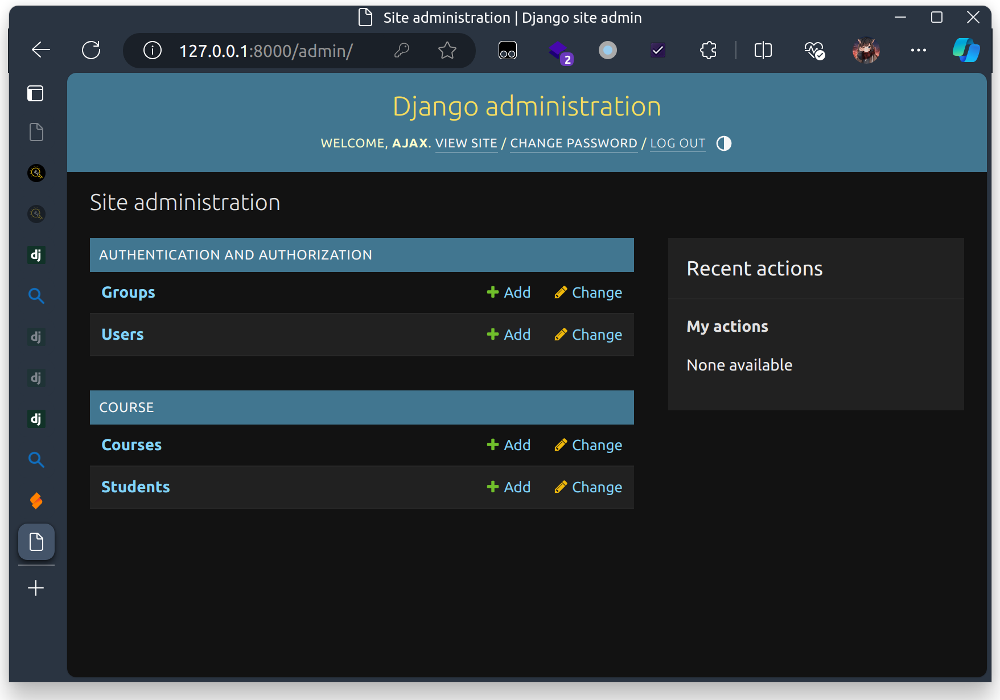
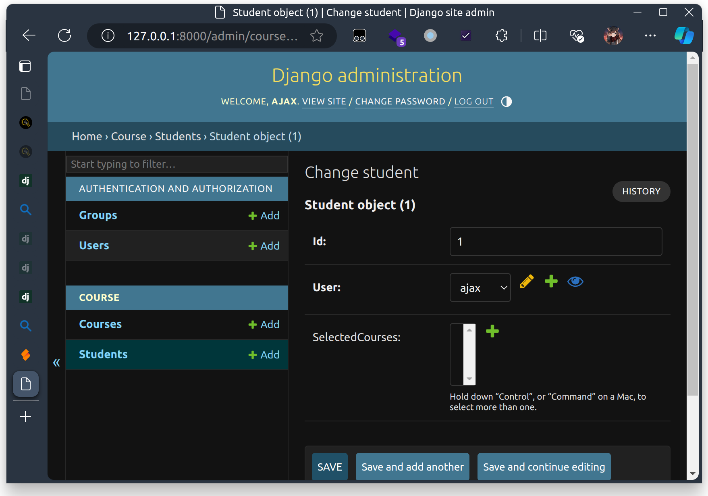

Django
前置知识
- 学习Django需要对python有一定的了解。
- 需要对Web前后端分离开发基础（包括HTML等）有一定的了解
简介
Django是Python语言中当下较热门的Web框架之一，其功能强大，组件繁多，便于个人使用者或小团队在短时间内搭建一个Web应用，是一个适合初学者入门前后端分离开发范式的开发框架，此外，其中的模版功能还提供了前后端不分离的开发框架。本文将从五个部分（文件树结构，路由，模型，视图，单元测试）来介绍Django，阅读后你将掌握独立开发简单web应用的能力。
文件树结构
在安装了 Django 库之后，我们可以使用 django-admin startproject <项目名> 来创建一个新项目。在新建项目后，我们进入项目文件夹，可以看到如下的文件树：
| .
├── manage.py # 使用命令行操作后端的主入口
└── <Project Name>
├── __init__.py
├── settings.py # 后端启动时应用的设置
├── urls.py # 主路由入口
├── asgi.py # 以 asgi 方式进行部署的配置文件
└── wsgi.py # 以 wsgi 方式进行部署的配置文件
|
项目部署的部分是小作业部署阶段（CI/CD 部分）的主要内容，这里我们不详细展开。
然后我们可以使用 python3 manage.py startapp <应用名> 来新建一个应用。一个 Django 项目中可以同时存在多个应用，一个应用是具有完成某个独立功能作用的模块，这之后你应该看到：
1
2
3
4
5
6
7
8
9
10
11
12
13
14
15
16
17 | .
├── app1 # 你创建的应用
│ ├── __init__.py
│ ├── admin.py
│ ├── apps.py
│ ├── migrations # 应用对数据库表及表属性的修改历史
│ │ └── __init__.py
│ ├── models.py # 应用的“模型”定义
│ ├── tests.py # 应用的“单元测试”定义
│ └── views.py # 应用的“视图”定义
├── manage.py
└── <Project Name>
├── __init__.py
├── asgi.py
├── settings.py
├── urls.py
└── wsgi.py
|
这时，你一般需要在 <project>/settings.py 中的 INSTALLED_APPS 字段中注册该应用。接下来，你应该能够理解下述目录结构：
1
2
3
4
5
6
7
8
9
10
11
12
13
14
15
16
17
18
19
20
21
22
23
24
25
26
27 | .
├── DjangoHW # 我们的项目名为 DjangoHW
│ ├── __init__.py
│ ├── asgi.py
│ ├── settings.py
│ ├── urls.py
│ └── wsgi.py
├── README.md
├── board # 我们新建了一个应用叫做 board
│ ├── __init__.py
│ ├── admin.py
│ ├── apps.py
│ ├── migrations
│ │ ├── 0001_initial.py
│ │ ├── 0002_remove_board_deleted_remove_user_deleted.py
│ │ └── __init__.py
│ ├── models.py
│ ├── tests.py
│ ├── urls.py
│ └── views.py
├── db.sqlite3 # 本地数据库存储
├── manage.py
├── requirements.txt
└── utils # 撰写的功能函数，可以放在应用中也可以放在根目录下，保证引用路径正确即可
├── utils_request.py
├── utils_require.py
└── utils_time.py
|
Note
本节对应官方文档 “编写你的第一个 Django 应用，第 1 部分” 中“创建项目”、“用于开发的简易服务器”、“创建投票应用”节。
路由（Routing）
首先，我们来解决后端收到请求时，后端会将请求交给哪个应用的哪个视图函数处理的问题。和这个功能有关的文件主要包括 <项目名>/urls.py 和 <应用名>/urls.py。
假如我们的后端部署在 my-backend.com，我们在访问 my-backend.com/board/restart 时，后端会首先在 <项目名>/urls.py 中以 board/restart 开始搜索。假设 <项目名>/urls.py 中配置为：
| from django.urls import path, include
urlpatterns = [
path('board/', include("board.urls")),
]
|
我们会匹配掉字符串 'board/'，然后将剩下的请求 restart 交给 board/urls.py 处理，这也是这里 include 的作用，将请求转发给子应用的路由表处理。
然后，假设我们在 board/urls.py 中配置为：
| from django.urls import path, include
import board.views as views
urlpatterns = [
path('restart', views.restart_board),
]
|
这时剩余请求 restart 匹配到第一条规则后，交由 board/views.py 中的 restart_board 函数进行处理，即后端会帮助我们调用这个函数，并把请求体（和请求有关的信息，包括请求方法、请求数据等等）作为参数传给这个函数。
此外还有更多和路由有关的功能，例如在路径中解析变量等，请阅读官方文档。
Question
假如 <project>/urls.py 要把所有的请求都转发给 api/urls.py，<project>/urls.py 中 path 应如何填写？
Django 中的 MVC 框架
我们认为, MVC 中的 M 对应 Model, V 对应 Template, C 对应 View.
模型（Models）
Note
如果你对记录、主键、外键、索引、联合主键这些概念并不熟悉，你可以阅读 这篇文档 快速入门。在实际的开发过程中，这些元数据对于数据表的设计以及数据库使用起来的性能是至关重要的。
Model 是后端的核心: 其定义了如何高效保存数据, 使得应用运行时的任意与数据库有关的操作的复杂度能控制在可以接受的范围内
在 Django 中，模型用于数据库中数据表的结构设计以及数据表的元数据（如主键、外键、索引等）管理。我们使用 Django 提供的 ORM 机制来进行对数据表和数据表列属性的管理。具体来说，我们只需要在 <app>/models.py 中定义一个类继承 django.db.models.Model 即可，比如官方文档中给出的定义：
| from django.db import models
class Question(models.Model):
question_text = models.CharField(max_length=200)
pub_date = models.DateTimeField()
class Choice(models.Model):
question = models.ForeignKey(Question, on_delete=models.CASCADE)
choice_text = models.CharField(max_length=200)
votes = models.IntegerField(default=0)
|
在你修改完应用的 models.py 之后，你应该使用如下命令去生成修改数据表结构与属性的语句：
| python3 manage.py makemigrations <app_name>
|
注意请 不要 将 migrations 文件夹纳入到 .gitignore 文件中 (此时在你更改数据库之后你应该运行 makemigrations, 这会定义如何将之前的数据库正确迁移到新的数据表结构中, 以保证数据库的连续性)。进而，每次在服务端部署时，在其运行之前，请确保你的部署脚本会执行：
| python3 manage.py migrate
|
将上条命令生成的修改表属性的语句应用到该部署所对应的数据库中。
由于我们只是进行本地测试，所以你可以在本地连续地输入这两条指令，本地的数据库会存储在 db.sqlite3 文件中。
Question
请查阅文档，主键、外键、联合主键、唯一性约束、索引这些元数据都应该如何创建？
Tip
如果没有显式定义主键, Django 会自动创建一个名为 id 的主键, 且会自动增加 unique=True 约束. 你可以通过 primary_key=True 来显式定义主键.
Warning
Django 的不同 ORM 后端可能带来不一样的特性! 如在 SQLite 中, 以下定义
| id = models.CharField(max_length=10, primary_key=True)
|
中虽然 id 的 max_length 是 10, 你依然可以存一个长度大于 10 的字符串进去而不引发错误. 但这并不代表着在 任意 DB Backend 中都可以这样! 换句话说, Django 可能并不能完整校验你的数据, 导致你的代码在不同的数据库后端中可能会有不同的行为. 所以 你需要在代码中显式校验你的数据
在完成字段定义之后, 可以使用 Question.objects 这个全局的对象来操作数据库. 这是一个 <django.db.models.manager.Manager object at 0x7dd182ee0ec0> 对象, 提供了增 (create) / 删 (delete) / 改 (update) / 查 (filter / get) 等等操作. 同时, 你也可以拿到实例之后和修改 Python 对象一样修改这个实例, 然后调用 save() 方法来保存修改.
1
2
3
4
5
6
7
8
9
10
11
12
13
14
15
16
17
18
19
20
21
22
23
24 | # Create
Question.objects.create(question_text="Q1")
# or
q = Question(question_text="Q2")
q.save() # This line raises if any constraints fail
# Query
Question.objects.filter(question_text='1')
# or
q = Question.objects.get(id=1) # This line raises if none match / multiple items match
# Update
Question.objects.filter(id=1).update(question_text='Q?')
# Returns the number of items updated
# or
q = Question.objects.get(id=1)
q.question_text = "Updated Text"
q.save()
# Delete
Question.objects.filter(id=1).delete()
|
更进阶的用法可以参考 Django ORM. 我只想在此指出, 由于这些操作 都是动态完成的 (IDE 没法帮你检查), 所以在更改 Model 的字段名称时, 需要格外小心检查是否所有静态和动态引用都得到了正确的更新.
数据库的一致性
在 Django 中, 除了部分操作 (create / update / delete) 之外, 对 object 的修改必须通过调用 save() 来保存; 而以上的操作都是实时写入 DB 的 (Auto-Commit).
数据库有关的操作都不可避免地存在可能的异常, 不管是由于网络问题, 由于自身的数据校验问题, 或者并发问题. 如果在部分操作已经写入数据库时出现异常, 则可能导致数据库不一致.
Note
举个例子, 如果你在一个事务中, 先创建了一个 User, 然后创建了一个 Profile, 如果在创建 Profile 时出现异常, 则数据库中会有一个 User, 但是没有对应的 Profile. 这种情况下, 数据库就是不一致的.
数据库不一致会导致你的应用出现各种奇怪的问题, 因为在编写代码时我们常常假定数据库中的数据是正确的. 比如在使用 User 的 Profile 时, 我们一般不会额外检查 User 是否存在 Profile, 而是找到 User 后直接查询 Profile.
因此, 期望的数据库操作应该是 原子的 (Atomic), 即要么全部成功, 要么全部失败. 可以通过我们自己写 Revert 逻辑, 也可以通过 Django 提供的 transaction.atomic 来实现.
在 atomic 块中的所有数据库操作要么全部成功; 要么全部失败. 如果在 atomic 块中的某个地方抛出异常, 数据库会回滚到 atomic 块开始的状态. 这有效解决了因为奇怪问题导致的数据库不一致错误.
| # All operations in this block are atomic
with transaction.atomic():
u = User.objects.create(username='john')
p = Profile.objects.create(user=u)
|
Admin 管理面板
Django 提供了一个内建的管理面板以方便管理数据库中的数据.
通过一两句话 (此处以另一个小项目作为例子)
| from .models import Student, Course
admin.site.register(Student)
admin.site.register(Course)
|
你就可以在管理面板中对这些 Model 进行增删改查操作了. 但首先, 你需要用
| ./manage.py createsuperuser
|
来创建一个超级用户, 然后用这个超级用户登录管理面板.


Django Admin 可以让你在生产环境爆炸的时候迅速修数据库 (x)
视图（Views）
我们接下来介绍视图函数。视图函数是后端逻辑的主入口，其接受经过路由之后的 HttpRequest 类型的请求作为参数，并返回一个 HttpResponse 类型的对象作为响应。你可以在上述链接中查找这两个类分别有哪些成员变量可以供你使用。
我们可以在 <app>/views.py 中定义一个应用所具有的视图函数。我们在这里举一个留言板应用“获取与创建留言”的视图函数作为例子：
1
2
3
4
5
6
7
8
9
10
11
12
13
14
15
16
17
18
19
20
21
22
23
24
25
26
27
28
29
30
31
32
33
34
35
36
37
38
39
40
41
42
43
44
45
46
47
48
49
50
51
52
53
54
55
56
57
58
59
60
61
62
63
64
65
66
67
68
69
70
71
72 | def message(request): # 这里 request 是 HttpRequest 类型的对象
# 功能函数，快速创建具有特定状态码的响应
def gen_response(code: int, data: str):
return JsonResponse({
'code': code,
'data': data
}, status=code) # JsonResponse 是 HttpResponse 的子类
# 可以传入一个 dict 转换成 JSON 响应
if request.method == 'GET':
limit = request.GET.get('limit', default='100')
offset = request.GET.get('offset', default='0')
if not limit.isdigit():
return gen_response(400, f'{limit} is not a number')
if not offset.isdigit():
return gen_response(400, f'{offset} is not a number')
return gen_response(200, [
{
'title': msg.title,
'content': msg.content,
'user': msg.user.name,
'timestamp': int(msg.pub_date.timestamp())
}
for msg in Message.objects.all()\
.order_by('-pub_date')\
[int(offset):int(offset)+int(limit)]
])
elif request.method == 'POST':
# 从 cookie 中获得 user 的名字，如果 user 不存在则新建一个
# 如果 cookie 中没有 user 则使用 "Unknown" 作为默认用户名
name = request.COOKIES['user']\
if 'user' in request.COOKIES else 'Unknown'
user = User.objects.filter(name=name).first()
if not user:
user = User(name = name)
try:
user.full_clean()
user.save()
except ValidationError as e:
return gen_response(400,
f"Validation Error of user: {e}")
# 验证请求的数据格式是否符合 json 规范，如果不符合则返回 400
try:
data = json.loads(request.body.decode("utf-8"))
except:
return gen_response(400,
"Exception occurred in request body parsing.")
# 验证请求数据是否满足接口要求，若通过所有的验证，则将新的消息添加到数据库中
# PS: {"title": "something", "content": "someting"}
# 这里 title 和 content 均有最大长度限制
try:
title = data['title']
content = data['content']
obj = Message(user=user, title=title, content=content)
obj.full_clean()
obj.save()
except:
return gen_response(400,
"Requested data failed verification.")
# 添加成功返回 code 201
return gen_response(201,
"Message received successfully")
else:
return gen_response(405,
f'Method {request.method} not allowed')
|
这是个经典的视图函数，面对 GET 方法返回数据库中的相应信息，面对 POST / PUT / DELETE 方法在做检查之后去修改对应的数据库内容，然后返回一个 JsonResponse 对象说明操作的结果，以 HTTP 状态码来区分操作的状态。
Note
本节对应官方文档 “编写你的第一个 Django 应用，第 1 部分” 中“编写第一个视图”节，“编写你的第一个 Django 应用，第 3 部分”中“编写更多视图”、“写一个真正有用的视图”、“抛出 404 错误”节。
单元测试（Unit Tests）
接下来我们介绍单元测试。在课程中我们学过，对模块进行测试，相比对模块拼接起来的系统直接测试所付出的代价要小得多。在真正的软件开发过程中，单元测试环节就是要对我们所开发的模块进行自动化的测试。在 Django 中，测试工程师会将开发工程师所编写的路由与视图视为黑盒，通过 django.test.TestCase 类与 django.test.Client 类来模拟前端与开发工程师所撰写的后端交互，并通过其提供的断言函数来断言响应所应该具有的属性或是数据库应被如何修改。以上述的留言板应用的视图函数为例，我们可以撰写如下测试：
1
2
3
4
5
6
7
8
9
10
11
12
13
14
15
16
17
18
19
20
21
22
23
24
25
26
27
28
29
30
31
32
33
34
35
36
37
38
39
40
41
42
43
44
45
46
47
48
49
50
51
52
53
54
55
56
57
58
59
60
61
62
63
64
65
66
67
68
69
70
71
72
73
74
75 | from django.test import TestCase, Client
from .models import Message, User # Defined in models.py
class MessageModelTests(TestCase):
def setUp(self): # Preparation
alice = User.objects.create(name="Alice")
bob = User.objects.create(name="Bob")
Message.objects.create(user=alice,
title="Hi",
content="Hello World!")
Message.objects.create(user=bob,
title="This is a title",
content="This is my content")
# 测试 POST 方法
def test_add_new_message(self):
# 模拟前端请求
title, content = "Title", "Message"
user = "student"
payload = {
'title': title,
'content': content,
}
self.client.cookies['user'] = user
response = self.client.post('/api/message',
data=payload,
content_type="application/json")
# 断言响应的属性
self.assertJSONEqual(response.content,
{
'code': 201,
'data': "Message received successfully"}
)
# 断言数据库的属性
self.assertTrue(User.objects.filter(name=user).exists())
self.assertTrue(Message.objects.filter(
title=title, content=content).exists())
# 测试 GET 方法
def test_message_can_be_fetched(self):
offset, limit = 0, 100
response_data = [
{
'title': msg.title,
'content': msg.content,
'user': msg.user.name,
'timestamp': int(msg.pub_date.timestamp())
}
for msg in Message.objects.all()\
.order_by('-pub_date')\
[int(offset):int(offset)+int(limit)]
]
response = self.client.get("/api/message")
self.assertEqual(response.status_code, 200)
self.assertEqual(response.json()['data'], response_data)
# 测试 Corner Case（如不存在 Title 字段）
def test_add_new_message_title_not_exists(self):
content = "Message"
user = "student"
payload = {
'content': content,
}
self.client.cookies['user'] = user
response = self.client.post('/api/message',
data=payload,
content_type="application/json")
self.assertEqual(response.status_code, 400)
|
Note
本节对应官方文档 “编写你的第一个 Django 应用，第 5 部分” 中的所有节。
模板（Template）
以上为Django在前后端分离时的适用方法，最后我们讲讲如何使用模版进行前后端不分离的开发。在Django中，模板是最常见的动态生成HTML的一种较为方便的方式。一个模板包含了所需HTML输出的静态部分，以及一些描述插入的动态内容的语法。
为了使用模板，我们需要在应用的文件目录下创建一个templates目录，然后再在templates目录下创建一个与应用名相同的目录，并在该目录下存放HTML模板，例如下面的文件树。
1
2
3
4
5
6
7
8
9
10
11
12
13
14
15
16
17
18
19
20
21
22
23
24
25
26
27
28
29
30 | .
├── DjangoHW # 我们的项目名为 DjangoHW
│ ├── __init__.py
│ ├── asgi.py
│ ├── settings.py
│ ├── urls.py
│ └── wsgi.py
├── README.md
├── board # 我们新建了一个应用叫做 board
│ ├── __init__.py
│ ├── admin.py
│ ├── apps.py
│ ├── migrations
│ │ ├── 0001_initial.py
│ │ ├── 0002_remove_board_deleted_remove_user_deleted.py
│ │ └── __init__.py
│ ├── templates
│ │ └── board
│ │ └── index.html # HTML模板存放的位置
│ ├── models.py
│ ├── tests.py
│ ├── urls.py
│ └── views.py
├── db.sqlite3 # 本地数据库存储
├── manage.py
├── requirements.txt
└── utils # 撰写的功能函数，可以放在应用中也可以放在根目录下，保证引用路径正确即可
├── utils_request.py
├── utils_require.py
└── utils_time.py
|
!!! question 思考题 为什么不讲模板直接放在templates目录下呢？
下面是一个调用模板的views.py和index.html中的部分官方代码示例。
| from django.shortcuts import render
from .models import Question
def index(request):
latest_question_list = Question.objects.order_by("-pub_date")[:5]
context = {"latest_question_list": latest_question_list}
return render(request, "polls/index.html", context)
|
| {% if latest_question_list %}
<ul>
{% for question in latest_question_list %}
<li><a href="/polls/{{ question.id }}/">{{ question.question_text }}</a></li>
{% endfor %}
</ul>
{% else %}
<p>No polls are available.</p>
{% endif %}
|
参考资料